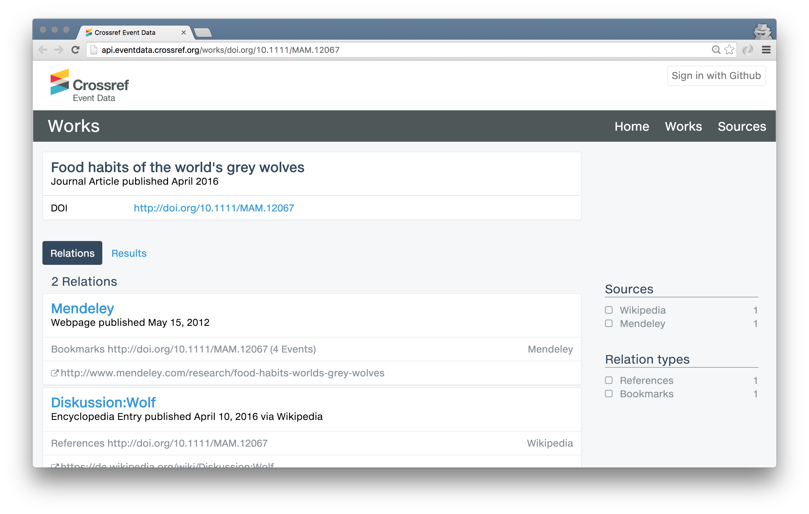

Crossref Event Data
Early Preview: This service is under development!
This service is under development with a launch expected the second half of 2016. You are welcome to take a look around pre-launch to get a feel for what it might offer when it’s released. Please note this service is not yet live. We will greatly expand the variety of platforms from which we will collect data. As this is a system in active development, you may experience hiccups in the service. Please contact us at eventdata@crossref.org with any questions or suggestions as we continue to work on the development.
What it will offer
Discussion around scholarly research often takes place on the web outside of the formal literature; for example on blogs, sharing services, social media, and wikis. This activity is made up of a number of individual “events” such as a bookmark, a comment, a social share, a citation, or a link.
What’s needed is community infrastructure to collect, store, and provide this raw data for anyone to access.
Crossref Event Data will capture and record a wide variety of events related to any content with a unique digital object identifier (DOI). The data will be openly available, portable, and audit-able. Anyone, such as publishers, funders, authors, bibliometricians, and librarians, will be able to process, interpret and integrate Event Data as they wish, gaining a broad understanding of how scholarly content is shared and consumed.
What are 'Events'?
An event is any activity that occurs around a research object that has a DOI. Events are expressed in the form of the relation between a research object, such as an article, and the relation it has to something on the web, such as a Wikipedia page or a tweet. For this early preview, you will be able to view the specific relation types listed below for our first three initial sources:
Mendeley
Mendeley is a reference manager and academic social network for scholars. View the number of social bookmarks from scholars or groups on Mendeley, and the demographic composition (geography, discipline, academic status).
Wikipedia
Wikipedia is an online encyclopedia, the Internet's largest and most popular general reference work. View references in Wikipedia of Crossref publications in Wikipedia articles in all languages.
Crossref to DataCite links
DataCite is a global consortium that assigns persistent identifiers to research data. This enables people to find, share, use, and cite data. View data citations that link Crossref DOIs to DataCite research outputs found in Crossref publications (work is underway to make the links found in DataCite metadata available in Event Data).
Want to take a look?
We have an interim display of the raw data avaible at http://api.eventdata.crossref.org/. At launch in the second half of 2016, we will provide formal mechanisms to view and access this data.
Each publication in this system is displayed as a 'work.' Browse event data for the external platform of interest based on Source or Works. Event activity is displayed for each work in the Relations tab. The Results tab displays a summary visualization based on the date in which the system received the data.
For example, doi.org/10.1111/MAM.12067 has been bookmarked in Medeley and cited in Wikipedia. View the live data for this work here
Background reading
You can find background on the Event Data section of the Crossref blog, including the planned list of sources, and updates on the development of the service.
Getting started
Don’t know where to turn? We suggest a read of our Quick Start guide to help get you, well, started!
User Guide
For more comprehensive technical documentation though, we have prepared a preliminary Crossref Event Data Technical User Guide with specifications to help provide you with an overview. Please note that specifications and documentation will continue to evolve as we progress through the technical development of this new service throughout 2016.
Please do get in touch if you have any questions or feedback as we continue to build the service.